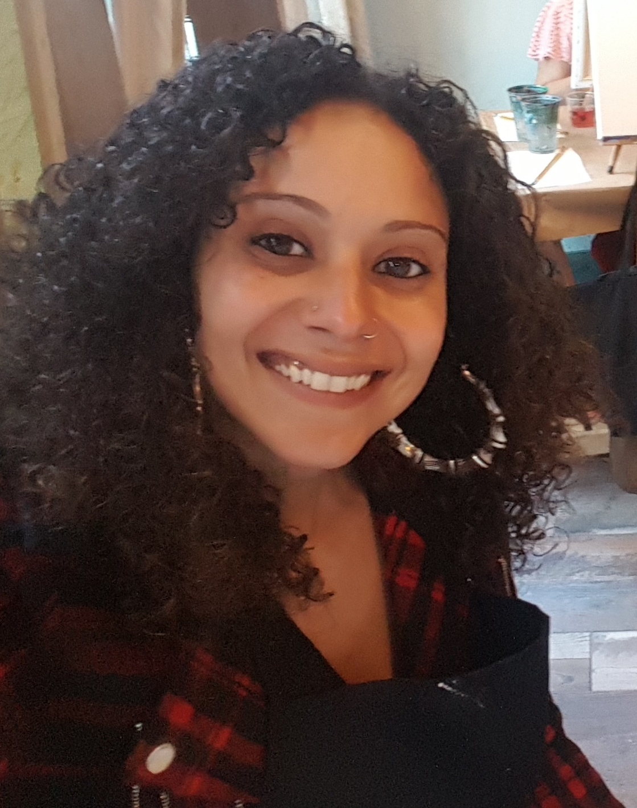

About Me
Hi! My name is Ruth-Esthel Campiz, but most of my friends and colleagues call me Ruthie. I gained an interest in web development when I was introduced to Myspace a few years after graduating from Penn State with a degree in Psychology. It was my first experience with social media, and being a creative and artistic person naturally, I wanted to learn how to my Myspace page "my own." I taught myself enough CSS and HTML to make my page personal. That Myspace page caught the eye of a web developer who I had met while working. He offered me the opportunity to learn more about web development with the idea that he would be able to groom me for a position that they were looking to fill at his current employer. I accepted and within three months, I was trained and hired as a front end web developer.
I am currently enrolled at Rutgers Coding Bootcamp.
When I'm not in front of my computer, cash me outside. How bow dat? I like exploring and walking with my dog, Cotto. Sunlight and laughing are one of my favorite combinations. I love dancing, singing, and creating art. I like reading books that become movies and then watching the movie to compare. I talk in movie quotes and music lyrics, and love it when somebody else can play along.